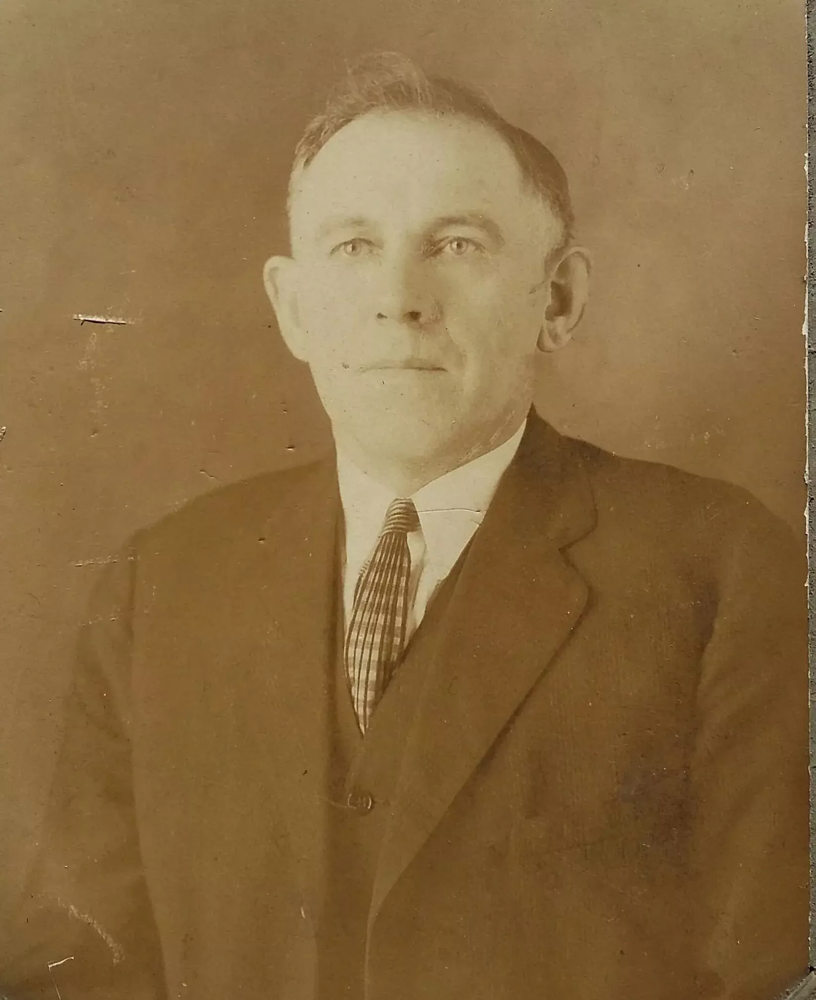
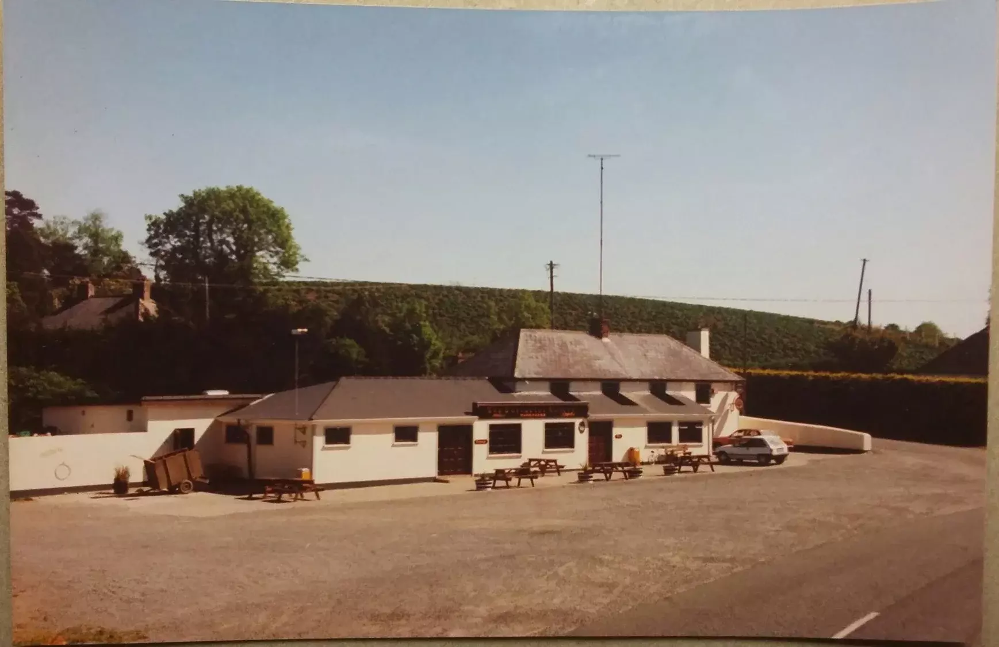
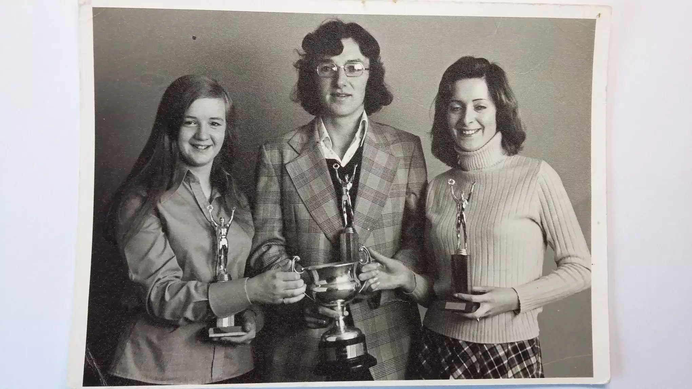

-

Raven Plantation
-

Frank 'The Blaker' Murphy.
Courtesy of his grand niece Jayne Paradis, Canada.
-

Curracloe Tavern.
Courtesy of Hotel Curracloe
-
A talented group of Irish dancers.
Courtesy of Curracloe National School.
-

'Saving Private Ryan' set Ballinesker Beach.
-

A photograph of the sea facing side of The Strand Hotel, Curracloe. Courtesy of Stanley Keane.
-

County Public Speaking Champions. Mid 70s. Susan Duggan, Brian McKenna and Kathleen Murphy.
-

Yellow Road Horseshoes Team. Courtesy of Paula Hearne.
-
The late Jimmy Howlin, pictured in 1962, outside The River Bar, Curracloe.
Courtesy of Annie Howlin.